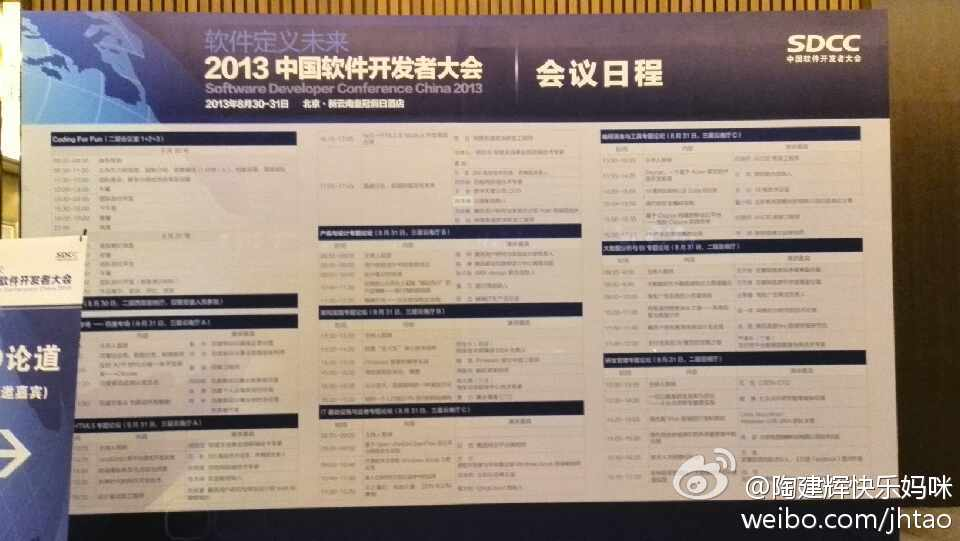
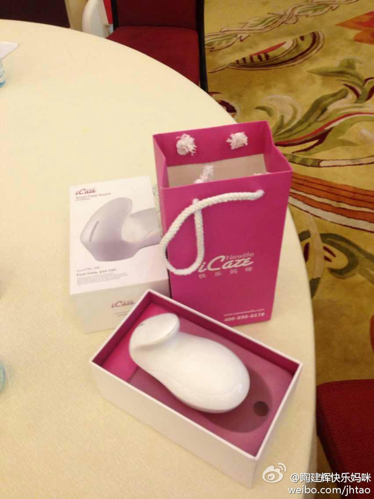

//@CSDN:#SDCC#李大学分享了自己的管理经验“IT管理123”，在进行IT管理时需要有一个愿景、两个关键（文化、结构）、三个体系（产品体系、架构体系及管理体系）。其中产品体系让产品经理说了算，架构体系让架构师说了算。@CTO俱乐部:#SDCC#"CTO论道"封闭论坛大牛们自我介绍环节结束，首位演讲人京东商城高级副总裁李大学 @大学001 分享:技术驱动,京东十年。
像陶总这样懂营销，会设计，又是编程大牛的人太少了，分享中所说的新模式（ditector+data processing+cloud）不容易复制。@陶建辉-涛思数据:参加软件开发者大会CTO论道，与技术同行分享了对软硬结合的看法。利用智能终端和移动互联网，消费电子行业将掀起一场新的革命。 
等众筹名单……//@traits:两千刀的目标快达成了 网页链接 不知道是不是国内第一个玩众筹的开源软件 @Ada李力 @程开源 //@traits: 我有一种要大出血的感觉 @开源中国@OpenBLAS:快来瞧，快来看，本项目发起购买测试机的募捐活动了，网页链接 有钱的捧个钱场，没钱的捧个人场。同时推出了匹配计划，您捐1刀，我捐1刀（最多累计1000刀）。
//@吴甘沙:喜欢Scala，也喜欢这几个有梦想、有冲劲、爱学习的年轻人，这个小社团才起步，还要Scala高手们多指导和提携 @邓草原 @囚千任 @王在祥 @程序员老高 @诺铁 @hongjiang_wang@Scala研学社:Scala研学社首次交流会将在本周五(8月30日)中国软件开发者大会上举行,地点位于会场三层休息室, 时间为周五整个下午. 其中宣讲时间为13:30 - 14:00. 欢迎参会的Scala爱好者和对Scala有兴趣的开发者拨冗参与! 届时将由Scala好书赠送, 数量有限, 先到先得.
 网页链接 我在这里:
网页链接 我在这里: 北京·北京新云南皇冠假日酒店
北京·北京新云南皇冠假日酒店